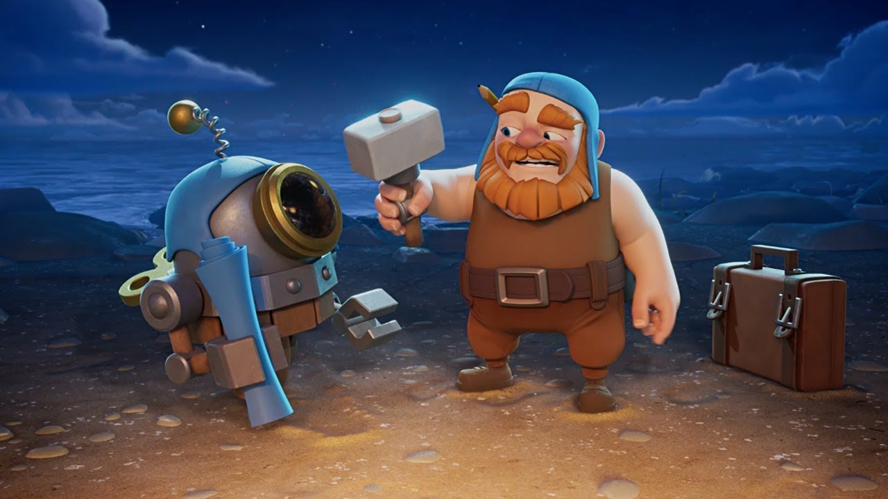

MECÁNICA
La mecánica de Clash of Clans es la de un juego de estrategia en tiempo real. El jugador comienza con una pequeña aldea que debe ser construida y mejorada a lo largo del juego. El objetivo del juego es defender la aldea de los ataques enemigos mientras se ataca y saquea las aldeas de otros jugadores para obtener recursos como oro, elixir y gemas. Los recursos se utilizan para mejorar y construir edificios, entrenar tropas, investigar tecnologías, mejorar las defensas y hacer hechizos. El jugador puede reclutar una variedad de tropas para su ejército, cada una con habilidades y características únicas, y puede utilizar hechizos para apoyar a su ejército en la batalla. Los jugadores también pueden unirse a clanes, donde pueden ayudar a sus compañeros de clan y participar en guerras de clanes, en las que dos clanes compiten entre sí para obtener puntos y recompensas. El juego se divide en dos modos: el modo de construcción y el modo de batalla. En el modo de construcción, los jugadores construyen y mejoran su aldea, mientras que en el modo de batalla, los jugadores atacan las aldeas de otros jugadores para obtener recursos y trofeos. En resumen, la mecánica de Clash of Clans implica la construcción y mejora de la aldea, la gestión de recursos, el entrenamiento y uso de tropas, la defensa contra ataques enemigos y el ataque y saqueo de aldeas de otros jugadores.

BENEFICIOS Y RÉCORDS
Clash of Clans ha sido un juego muy exitoso desde su lanzamiento en 2012, y ha generado una gran cantidad de beneficios y registros en su historia. En términos de beneficios, Clash of Clans ha sido uno de los juegos móviles más rentables de la historia. Según las estimaciones, el juego ha generado más de $ 7 mil millones en ingresos desde su lanzamiento. Además, Clash of Clans ha establecido varios récords en la industria de los juegos móviles. En 2014, Clash of Clans se convirtió en el juego móvil más descargado en todo el mundo, y en 2015 fue el juego móvil más rentable en los Estados Unidos. También ha sido uno de los juegos más populares en las tiendas de aplicaciones de todo el mundo durante muchos años. Clash of Clans también ha sido reconocido por su impacto en la industria de los juegos móviles, estableciendo un nuevo estándar para la calidad y la jugabilidad en los juegos móviles. El juego ha sido elogiado por su diseño y mecánica, así como por su capacidad para mantener a los jugadores comprometidos y enganchados durante períodos prolongados. En resumen, Clash of Clans ha sido un juego muy exitoso y ha generado una gran cantidad de beneficios y registros en la industria de los juegos móviles. Su éxito se debe en gran medida a su diseño y mecánica innovadores, así como a su capacidad para mantener a los jugadores comprometidos durante períodos prolongados.

INFO EXTRA FANDOM.COM